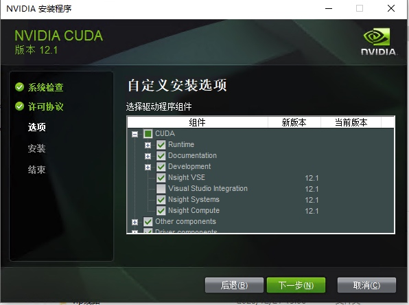
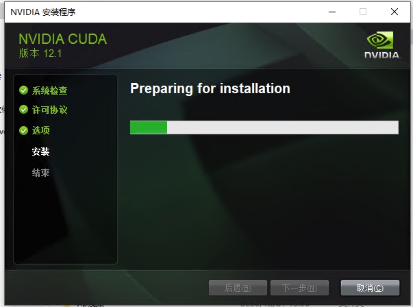

Windows、x86_64、10、exe(local)，点击网页中的exe(local)开始下载。
Windows、x86_64、10、exe(local)，点击网页中的exe(local)开始下载。下载完成后得到一个大概3g的安装包，打开进行安装，选择一个临时目录进行解压，点击ok

等待解压完成

解压完成后进入安装界面，这里也需要等待

点击同意并继续

点击自定义后点击下一步

展开CUDA选项取消勾选Visual Studio Integration，如图所示，其余不动，点击下一步

安装位置不需要修改，直接点击下一步

等待安装结束即可



Download cuDNN Library按钮进入下图的下载界面
for CUDA 12.x进行下一个界面
Local install for Windows(Zip)进行下载

bin、include、lib并复制到CUDA的安装目录，默认目录为C:\Program Files\NVIDIA GPU Computing Toolkit\CUDA\v12.1

复制过程中出现弹窗，选择替换即可
4. 将CUDA添加到环境变量中

新建按钮，添加以下路径C:\Program Files\NVIDIA GPU Computing Toolkit\CUDA\v12.1\bin
C:\Program Files\NVIDIA GPU Computing Toolkit\CUDA\v12.1\include
C:\Program Files\NVIDIA GPU Computing Toolkit\CUDA\v12.1\lib
C:\Program Files\NVIDIA GPU Computing Toolkit\CUDA\v12.1\libnvvp

Conda本身是一个开源的包管理和环境管理系统，用于安装、运行和升级包和其依赖。Conda可以在不同的Python发行版中使用，其中Anaconda和Miniconda是最著名的两种发行版，它们都包括了conda这个工具。
环境管理器：
- 创建隔离环境： Conda允许用户创建隔离的环境，每个环境都可以有不同的Python版本和/或包。这对于管理不同项目的依赖非常有用，避免了包之间的冲突。
- 环境复制： 可以轻松地复制和共享环境，这对于确保代码在不同计算机或用户之间可重复是非常有用的。
Conda是一个强大的工具，主要用于科学计算领域，它的作用可以从几个不同的方面来理解：
本文档选择Anaconda进行安装，进入Anaconda下载，下载Windows版本的安装包即可

Next进入下一步
I Agree同意协议
Just Me，点击下一步

Install进行安装，等待安装完成主要是配置环境变量，步骤与配置CUDA的步骤一样
新建按钮，添加以下路径D:\ProgramData\anaconda3
D:\ProgramData\anaconda3\condabin
D:\ProgramData\anaconda3\Library\bin
注意：这里的D:\ProgramData\anaconda3是anaconda的安装路径，应该替换为你实际的安装地址，添加路径之后应该是这样的
进入vscode官网，下载Windows的Stable安装包

在VScode中配置python的运行环境
Chinese插件并安装
Ctrl+Shift+P，输入config display language，选择中文即可
Python、Python Environment Manager进行安装

Pytorch是yolo进行检测与训练需要的最基本的库，也需要根据当前最新的pytorch支持的cuda版本，选择对应版本的CUDA安装，

在网站中Pytorch Build选择Stable，Your OS选择Windows，Package选择Pip，Language选择Python，Compute Platform选择较新的版本（是因为4060ti是较新的显卡），即CUDA 12.1，最终选择如图，复制最后的Run this Command
pip3 install torch torchvision torchaudio --index-url https://download.pytorch.org/whl/cu121
前面的conda安装好之后，需要对
PowerShell进行简单的配置
PowerShell，点击以管理员身份运行。
conda init

Unrestricted，通过如下命令进行设置Set-ExecutionPolicy Unrestricted
运行Get-ExecutionPolicy以确认更改已生效
配置一个独立的python环境
conda create -n auto_template python==3.9
conda activate auto_template激活环境，在输入之前的pytorch命令安装pytorchpip3 install torch torchvision torchaudio --index-url https://download.pytorch.org/whl/cu121
安装完成后，创建一个测试用的python文件，输入以下代码
import torch
print(torch.cuda.is_available())
运行后查看输出是否为True，为True则代表安装一切顺利